WhatsApp clone in html5,css3,php and Websocket
Overview
Everyone likes the WhatsApp Private Messaging System where communication has been made easy with amazing features to enhance user experience.
As a result, we saw the need to design a similar system which is also responsive to screen and uses the latest technologies especially for the higher versions of PHP to make life easier for our good users or clients and the love we have for you guys.
This amazing social networking system is a user friendly application which is similar to that of WhatsApp with more advance features and functionalities, the system also is very easy to install and customize to suit your needs because we had the users in mind while designing the system.
The script was supposed to be entirely free of charge because we really love you guys, all we have in our heads we learnt them from here, but recently our office got fire and it was not insured,lucky enough copy of this script was in one of developer's laptop. We're here by offering this script @ 20$ or you can as well as Donate as little as 15$ and download this script, with the support you have given to us will ensure you that more features and support will be given to you all the time free of charge.You will see the difference when you test or demo the system via the link at the top section of this page. We are proud to inform you that you won't find this kind of system any where on the net except here. We have had previous versions of the Private Messaging System but this one is beyond "special" due to its new features and responsiveness
Through this System you will learn a lot, and we're here to help you! lets get started
Dorochat features
1) Responsiveness: The system is fully responsive to screen which means that it can work on any device, whether big or small screen sizes, the system is fully compatible. 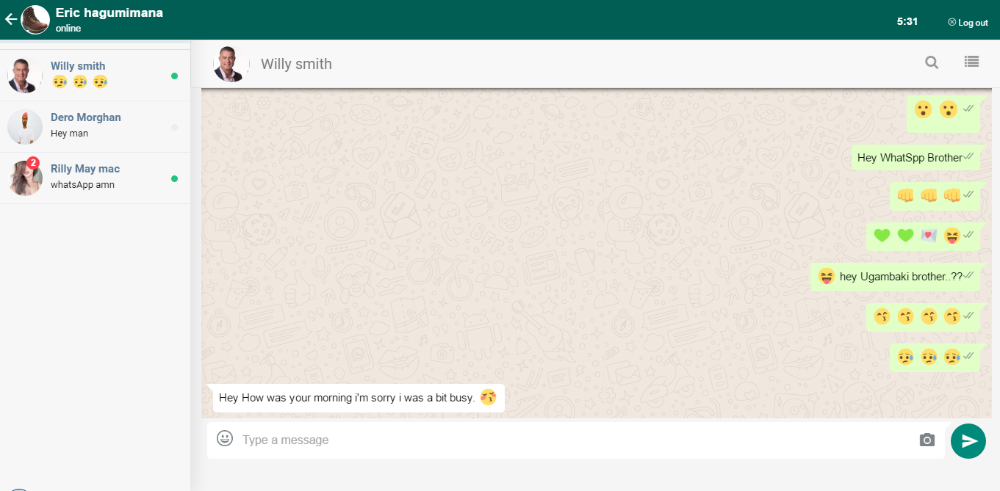
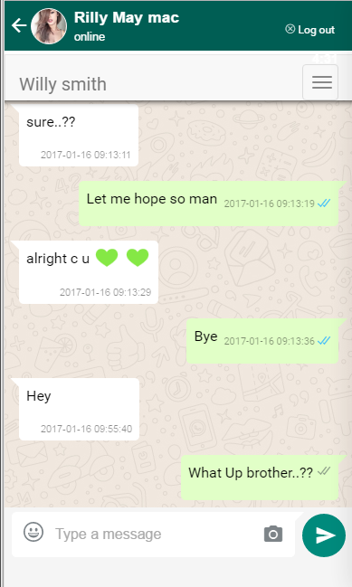2) Sign-up and Login: Users can sign in and sign up securely without Sql injection or other hacks. 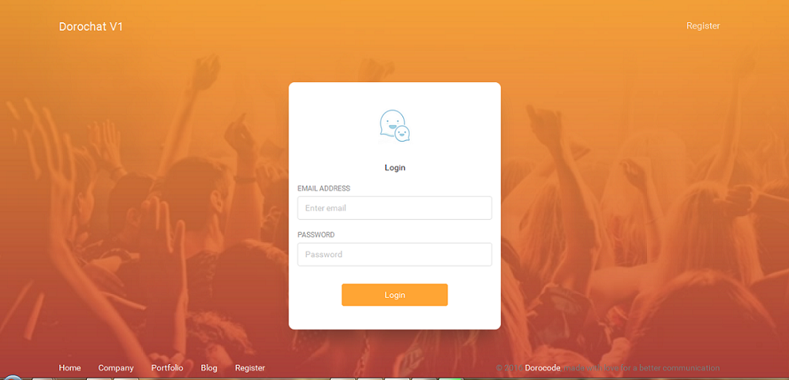
3) Private Messaging: communication is end to end very fast. no refreshing page, no stress to the server all tips and full documentation on how this system works, everything from A-Z with this system can be found in the zip file that you will download. 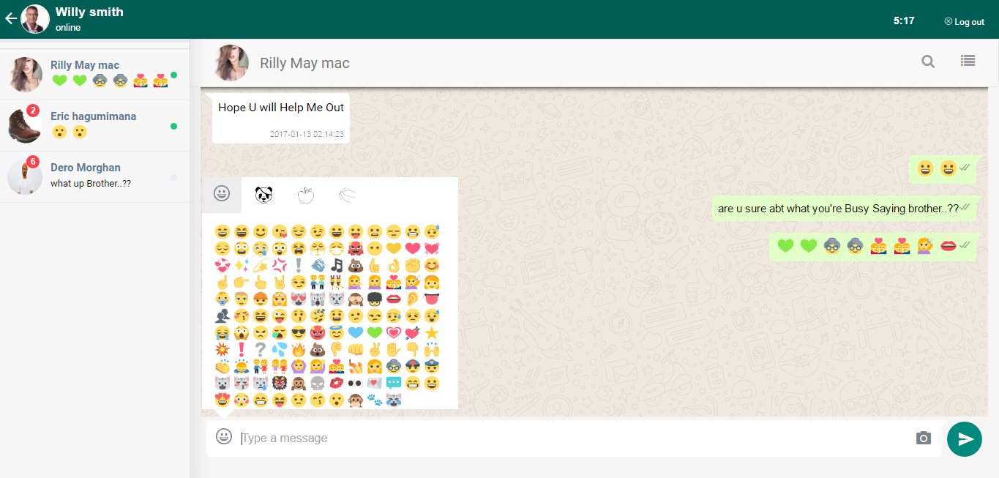
4) Start new Conversation, amazing. 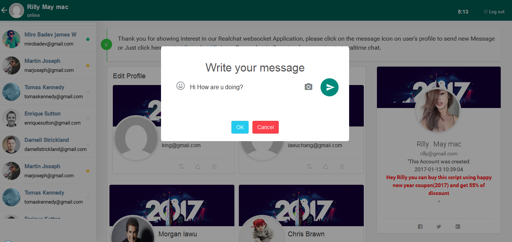
5) Block & Unblock user, amazing. 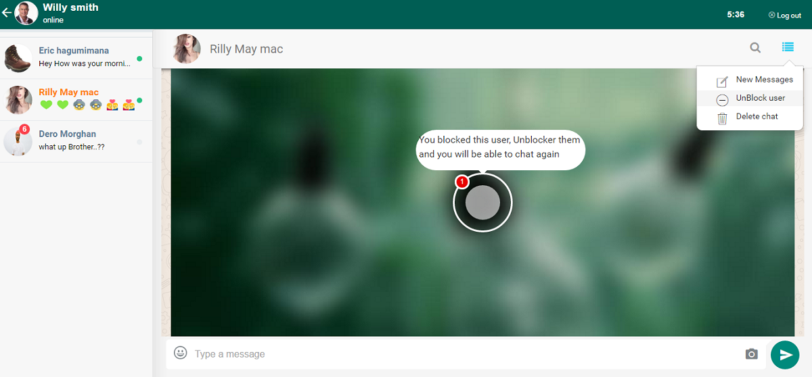
6) Delete entire conversation: Users will be able to delete an entire conversation just as WhatsApp also does should the need for that arise. 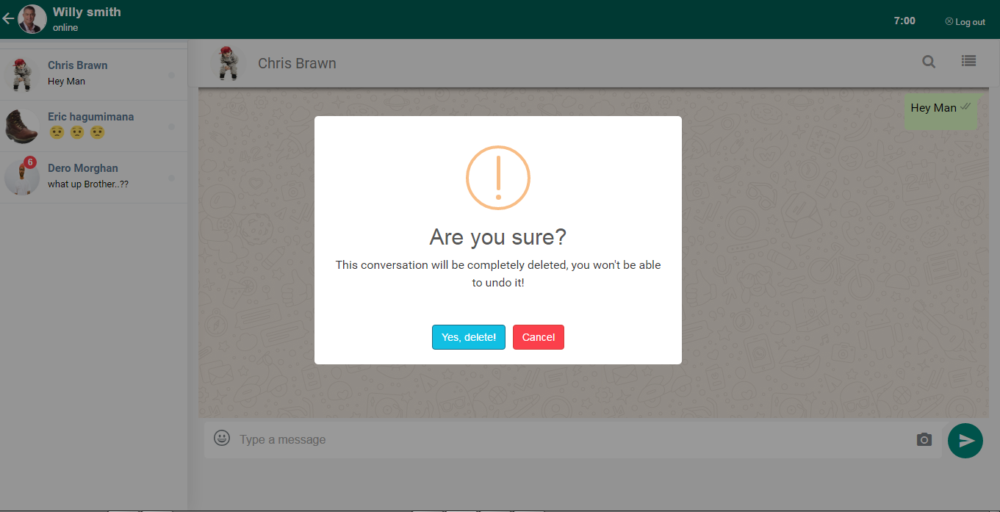
7) Search Conversation on small device 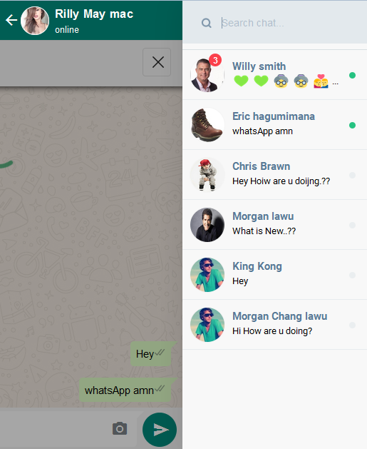
7) Nice Smiley Box: There is a nicely designed smiley box for message sending purposes where users can easily select their desired smiley at any given time.
8) Sound Notification for new message in chat
9)Auto Load Messages: Older messages are loaded automatically when the user scrolls the message displayed box top just as WhatsApp does
10) Scroll to Bottom on New Message Received: The system auto scrolls to bottom when a new message in a current conversation session comes in to show the message to the user concerned.
11)Show red Notification for New Message Just like WhatsApp count and show new messsage notification 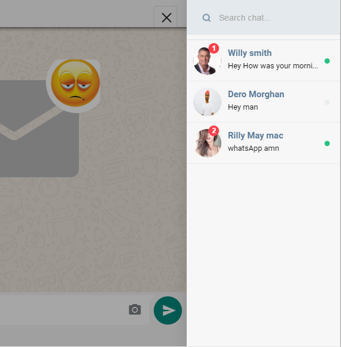
12) User status(Online, Busy and away) with a cool design
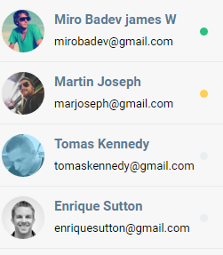
13) Message seen notification
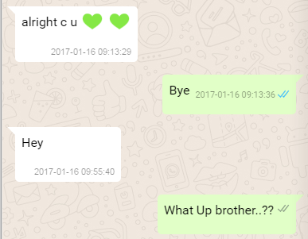